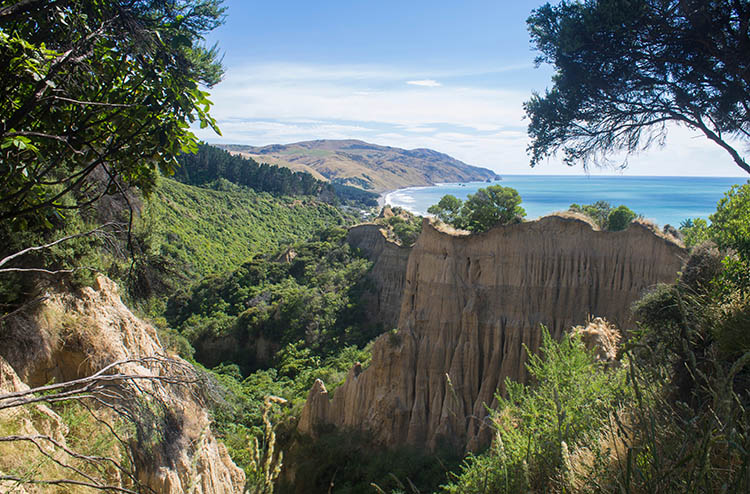

Cathedral Gully & Gore Bay
Limestone formations, sculpted cliffs and an open coast define this part of North Canterbury. Cathedral Gully and Gore Bay reveal wide beaches, clear horizons and a strong sense of space.
A landscape where time moves slowly and nature sets the pace.
→ Explore Cathedral Gully → Explore Gore Bay